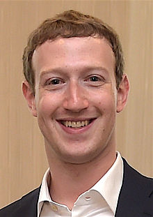

Zuckerberg was born in 1984 in White Plains, New York. He is the son of dentist Edward Zuckerberg and psychiatrist Karen Kempner.He and his three sisters, Randi, Donna, and Arielle,[15] were brought up in Dobbs Ferry, New York, a small Westchester County village about 21 miles north of Midtown Manhattan. Zuckerberg was raised Jewish and had his bar mitzvah when he turned 13. Afterward, he became anatheist. He has shown an appreciation for Buddhism.
At Ardsley High School, Zuckerberg excelled in classes. He transferred to the exclusive private school, Phillips Exeter Academy, in New Hampshire in his junior year, where he won prizes in science (math, astronomy, and physics) and classical studies. On his college application, Zuckerberg claimed that he could read and write French, Hebrew, Latin, and ancient Greek. He was captain of the fencing team.
Zuckerberg began using computers and writing software in middle school. His father taught him Atari BASIC Programming in the 1990s, and later hired software developer David Newman to tutor him privately. Newman calls him a "prodigy", adding that it was "tough to stay ahead of him". Zuckerberg took a graduate course in the subject at Mercy Collegenear his home while still in high school. He enjoyed developing computer programs, especially communication tools and games. In one program, since his father's dental practice was operated from their home, he built a software program he called "ZuckNet" that allowed all the computers between the house and dental office to communicate with each other. It is considered a "primitive" version of AOL's Instant Messenger, which came out the following year.
According to writer Jose Antonio Vargas, "some kids played computer games. Mark created them." Zuckerberg himself recalls this period: "I had a bunch of friends who were artists. They'd come over, draw stuff, and I'd build a game out of it." However, notes Vargas, Zuckerberg was not a typical "geek-klutz", as he later became captain of his prep school fencing team and earned a classics diploma. Napster co-founder Sean Parker, a close friend, notes that Zuckerberg was "really into Greek odysseys and all that stuff", recalling how he once quoted lines from the Roman epic poem Aeneid, by Virgil, during a Facebook product conference.
During Zuckerberg's high school years, under the company name Intelligent Media Group, he built a music player called the Synapse Media Player that used machine learning to learn the user's listening habits, which was posted to Slashdot and received a rating of 3 out of 5 from PC Magazine.
By the time he began classes at Harvard, Zuckerberg had already achieved a "reputation as a programming prodigy", notes Vargas. He studied psychology and computer science as well as belonging to Alpha Epsilon Pi and Kirkland House.In his sophomore year, he wrote a program he called CourseMatch, which allowed users to make class selection decisions based on the choices of other students and also to help them form study groups. A short time later, he created a different program he initially calledFacemash that let students select the best looking person from a choice of photos. According to Zuckerberg's roommate at the time, Arie Hasit, "he built the site for fun". Hasit explains:
The site went up over a weekend; but by Monday morning, the college shut it down because its popularity had overwhelmed one of Harvard's network switches and prevented students from accessing the Internet. In addition, many students complained that their photos were being used without permission. Zuckerberg apologized publicly, and the student paper ran articles stating that his site was "completely improper."
The following semester, in January 2004, Zuckerberg began writing code for a new website. On February 4, 2004, Zuckerberg launched "Thefacebook", originally located at thefacebook.com.
Six days after the site launched, three Harvard seniors, Cameron Winklevoss, Tyler Winklevoss, and Divya Narendra, accused Zuckerberg of intentionally misleading them into believing he would help them build a social network called HarvardConnection.com, while he was instead using their ideas to build a competing product.The three complained to the Harvard Crimson and the newspaper began an investigation in response.
Following the official launch of the Facebook social media platform, the three filed a lawsuit against Zuckerberg that resulted in a settlement.[33] The agreed settlement was for 1.2 million Facebook shares that were worth US$300 million at Facebook's IPO.[34]
Zuckerberg dropped out of Harvard in his sophomore year to complete his project.[35] In January 2014, Zuckerberg recalled: